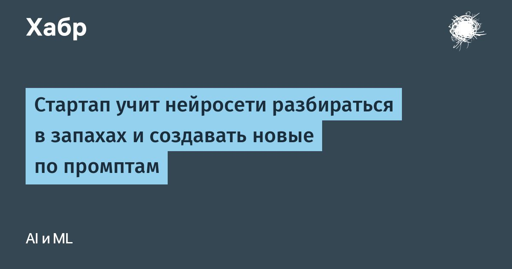

Как ИИ учится нюхать: стартап Osmo создаёт цифровое обоняние для парфюмерии и диагностики
Стартап Osmo разрабатывает первую базовую модель для распознавания и генерации запахов по текстовым запросам. Технология уже применяется в парфюмерной индустрии и проверяется для выявления подделок, а в перспективе может стать инструментом медицинской диагностики.
От сбора данных к пониманию молекул
Основатель Алекс Вилтшко, бывший исследователь Google Brain, столкнулся с главной проблемой ольфакторного ИИ — нехваткой качественных данных. До появления Osmo в открытых базах насчитывалось менее двухсот тысяч человеческих описаний запахов, а парфюмерные компании держали свои наработки в строгой тайне, а оборудование для химического анализа стоило дорого.
Команда создала собственный массив: более десяти миллионов человеческих оценок и восемьсот миллионов «ароматических токенов» — точных описаний молекулярного состава и концентраций. Спектрометры работают круглосуточно, анализируя всё: от цветов и фруктов до продуктов питания и биологических тканей, а группа из семидесяти обученных специалистов фиксирует ощущения по единой терминологии.

Как нейросеть связывает химию с восприятием
Модель обучается не на текстах, а на субъективном человеческом опыте: люди нюхают образцы и описывают их стандартизированными дескрипторами. Это позволяет выявлять неочевидные параллели — например, молекулярный профиль запаха новорожденного ребёнка во многом совпадает с профилем свежесваренных спагетти, хотя ассоциации у людей совершенно разные.
Роботизированная установка размером со школьный автобус смешивает ингредиенты по формулам, которые выдаёт ИИ, и «печатает» образцы ароматов по текстовому промпту. По словам Вилтшко, система уже не уступает среднему человеку в распознавании и начинающему парфюмеру — в создании новых композиций.

Первые коммерческие кейсы и скептицизм экспертов
Технологию уже используют крупные производители бытовых товаров, в том числе Procter & Gamble, для разработки парфюмерных продуктов. Онлайн-маркетплейс StockX протестировал анализ запаха для выявления поддельных кроссовок: ИИ определяет различия в химическом составе материалов, которые невидимы глазу.
Учёный-ольфактолог Эйвери Гилберт критикует проект за чрезмерную зависимость от человеческих сенсорных панелей и отсутствие доказательной базы в патентных заявках. Вилтшко отвечает, что обоняние — фундаментально человеческий опыт, поэтому модель должна учиться у людей, чтобы предсказывать восприятие так же точно, как живой нос.
Контекст, ограничения и медицинские перспективы
Бывший консультант Osmo Михаэль Шмукер признаёт достижение значительным, но отмечает: обоняние неразрывно связано с контекстом. Те же молекулы есть в камамбре и в использованных подгузниках, но человек их не перепутает. В лабораторных условиях контекст можно контролировать, но для реальных задач — например, диагностики по выдыхаемому воздуху — сенсорика и модели должны стать точнее.
Вилтшко сравнивает свой подход с разведкой у подножия горы: вместо штурма вершины медицинской диагностики «в лоб» компания систематизирует мир запахов, создавая фундамент. Если сенсорные технологии продолжат развиваться, цифровое обоняние может стать каналом восприятия для мировых моделей ИИ, открывая путь к неинвазивному скринингу состояний организма.
Как внедрить ИИ-обоняние в разработку ароматов
Прежде чем внедрять ИИ-обоняние в работу парфюмерного отдела, стоит обсудить с экспертом по цифровой ольфакторной науке готовность существующей базы данных: есть ли унифицированные описания ароматов, молекулярные профили ингредиентов и история сенсорных оценок. Подготовка включает аудит текущей ароматеки, приведение терминологии к единому стандарту и оцифровку формуляров. Технология не подойдёт компаниям, у которых нет структурированных сенсорных панелей или которые опираются исключительно на интуитивный подбор ингредиентов без фиксации результатов.
Качество предсказаний модели напрямую зависит от полноты и достоверности обучающей выборки: чем точнее человеческие оценки и полнее молекулярные данные, тем надёжнее генерация новых аккордов. Результат также определяется глубиной интеграции ИИ в процесс R&D — от разового консультирования до полноценного цикла «промпт — образец — обратная связь». Успех требует готовности парфюмеров работать в паре с алгоритмом, проверяя и корректируя его предложения, а не передавать ему творческие решения полностью.
Коротко: Osmo построил крупнейшую базу ольфакторных данных и научил ИИ предсказывать восприятие запаха по молекулярной формуле. Технология уже работает в парфюмерии и контроле подлинности, но путь к медицинской диагностике требует решения проблемы контекста и точности сенсоров.
Поверили бы вы ИИ в выборе аромата для косметического средства или в диагностике по запаху кожи?